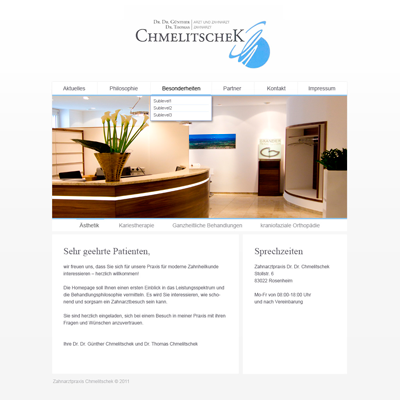
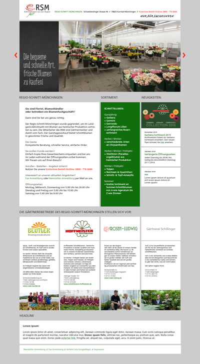
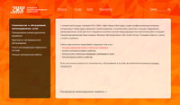

Мои первые проекты
Сайт стоматологического кабинета Chmelitschek.Моя первая серьезная работа после долгого перерыва - это верстка для сайта стомотологического кабинета http://www.dr-chmelitschek.de/ Был приятно удивлен появившемся технологиям, а именно до неузнаваемости изменившемуся CSS и удобному и быстрому JQuery. О как много я еще не знал :)

Не сложный по функционалу одностраничный сайт для цветочного магазина. Расширенная работа со шрифтами (пришлось прибегуть к помощи "Белки") и не сложный слайдер с кастомным контролом. Можно пройти по ссылке для его просмотра.

Написание компонентов/скриптов/сниппетов
StarterKit-SASS-Gulp-AngularJsНадоело каждый раз начинать с нуля и собирать все заново. Автоматизировать работу решил, создав стартер проект. Внутри всё, что есть в загаловке. Описание проекта тут.
Работая с проектом обнаружил, что решений с компонентом обычного вертикального древовидного меню не так много. Стандартный компонент значительно отличался и по-моему сложнее, чем надо. Для этих случаев включается мозг, заваривается кофе и ... (подготовлю демку и размещу здесь).

Тестовые задания и приложения
Приложение для отображения текущей погодыПриложение для получения текущей погоды в городах Мира. Добавляем в список города - получаем данные о погодных условиях: температуру, влажность, давление и силу ветра. Обновление погоды производится почасово. Проект на GitHub доступен тут. Приложение использует localStorage, поэтому перезагрузка страницы не ведет к потере данных из списка городов. Роутинг через стандартный ngRoute. На основе $resource построенно обращение к внешнему источнику данных. Я использовал сайт openweathermap.org.